群管理的选群列表只显示当前已加载账号的群；停用测试账号的历史群仍保留在库中，
不再作为生产操作选项。其他页面的机器人选择同样排除明确停用的实例。
刷新后若原账号已经移除，清空原选择、预览和成员信息，不自动切到同名群。
本部署生产账号为小满43506527；隐藏选项不等于删除账号、历史配置或审计。
选中群不等于开通服务。显示“待开通”时，应先在“开通”核实机器人原生管理权限， 选定本群原生管理，预览并确认规则开通，再到“规则”维护开关。 成员目录超限或校验失败时不能用部分名单开通；成员目录接口单独允许最多3MiB， 仍须通过认证、解压大小、传输身份和完整分页校验。普通接口上限仍为1MiB。
页面提示“管理接口暂时不可用（502）”时，先稍后刷新读取状态。 如果刚执行保存、拉黑或禁言，请先核对结果，不要连续重复提交； 502本身不能证明原操作未提交。管理页不会自动重试这些操作。 排查时区分平台目录响应被拒绝与服务重启期间代理连接失败，不能仅凭机器人在线判定页面正常。
全部旺商聊私信功能退役，私信专属业务代码、旧菜单、专属客服和好友模块已物理删除： 不再提供私信选群、好友自动审批与私信欢迎、个人知识、私信AI、管理员私信指引、私信财务或图片收取。 群图文、群AI、活动与原账本保留，不将退役私信功能迁入群AI。 历史会话、知识、邀请、账本、付款记录与审计保留，不因退役清空或转成群内公开资料。 **2026-11-02 01:48（北京时间）**的受控完整重启加载属于此前版本记录， 不代表本轮删码与命令变更已部署、历史数据已清理或手机验收通过；本轮完整实群验收未完成。
| 旧入口 | 现在的位置或处理 |
|---|---|
| 私信菜单、数字菜单、选择群、私信管理员命令 | 到目标群使用保留命令；已有相应后台权限者在WebUI查看使用帮助，不提供跨群聊天选单 |
| 群内帮助、我的权限及别名 | 聊天入口已移除，包括帮助、群管帮助、help／/help、我的权限、sid／/sid及原前缀写法；WebUI帮助保留 |
| 黑名单禁言时长聊天设置 | 聊天预览确认入口已移除；已有相应后台权限者使用群管理→规则→黑名单设置，既有群时长不改 |
| 私信黑白名单 | 群内真实@／可信原生回复，或已有相应后台权限者使用群管理→规则 |
私信广告图片及附件录入 |
群管理→规则→关键词回复与定时发言上传；关键词每条1张，广告每计划最多3张、每次轮换1张 |
| 好友自动审批、欢迎；群管理→好友申请 | 删除入口，无自动加好友替代 |
个人知识、专属客服、/chat、管理员私信指引；AI→客服／管理员指引 |
删除入口，不迁入群AI；群AI仅用本账号本群的服务端配置 |
| 私信结账、付款确认；活动与财务→财务授权 | 删除聊天及私信财务授权；已有后台权限者仍用活动与财务→邀请记账／结账 |
普通群管理员不会因此获得AstrBot全局后台访问权，不共享总控密码， 旧聊天财务角色也不自动变成后台账号。没有相应后台权限，请现有负责人维护图文或财务。 邀请活动积分、群内邀请查询、抽奖以及后台邀请记账／结账保留；个人现金与收款资料不搬到公开群里。
全部群员均可查询排名／排行，不要求查询者具备管理身份。
今日排名、今日排行、排行榜、发言排行、发言排行榜及原斜杠写法继续兼容。
只显示北京时间今天的有效发言前20名，不分页；旧排名 2／排行 2也只返回同一份前20名。
逐行格式为1:昵称（有效发言N条），显示昵称和有效条数，不显示内部UID或传输ID。
按可信成员记录核对昵称，不按昵称猜身份；真实数字昵称保留，无法核实名字时显示“未获取昵称”。
命令及对应回复仍按原机制自动撤回，不改变内部按UID排序统计或自动白名单资格规则。
源码新增入口：旺商聊群管 → 群管理 → 规则 → 选择群 → 入群欢迎。 默认关闭，填写最多300字欢迎语，勾选启用后点“预览修改 → 确认保存”。 系统自动在正文前真正@新成员，不需要手写@或填写UID；与私信欢迎无关。 这里只修改欢迎配置，不重排定时发言、不改变广告、名单、处罚或财务设置。
可信入群通知须结合最新入群事件及完整成员目录核实；邀请申请、普通文字、 历史通知和重复通知不会直接触发。入群短暂合并2秒，3人及以上同时进群只发一条， 同一窗口的1至2人也合并；每条最多@20人且须符合原生消息大小限制， 超大批次显示总人数，不拆成多条刷屏。已拉黑成员和机器人不发送欢迎。 发送受理后开始20秒撤回计时，不每秒编辑或发送倒数消息。 第二条欢迎确认发出后，上一条立即进入撤回队列；第二条失败或未知不提前撤回第一条。 这只撤回机器人自己的欢迎消息，不触及普通群员或广告。
发送与撤回使用持久原生回执，未知结果不自动重发／重撤； 暂时断线后的撤回受原生队列时效约束，不保证手机恰好第20秒消失。 停用、暂停、撤权或身份变化会阻止未提交的新欢迎，不自动重发升级前的入群通知。 涉及接入器改动，需要受控完整重启；仅插件热重载不足。 源码及隔离验收状态见维护记录，未启用任何正式群，手机端仍待真实入群验收。
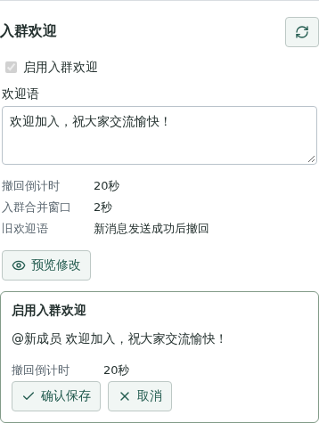
2026-11-03源码更新：旺商聊群管 → 群管理 → 视频转发。 移除该页面的Telegram来源、历史采集、并发草稿和不可用的启动按钮；不再采集Telegram视频， 也不迁移或删除独立群聊统计采集器的账号、会话、统计库与监控。 旧配置读取时舍弃退役字段，自动发送默认关闭，不因升级自动向正式群发视频。
支持MacCMS的ac=list和ac=detail&ids=...、详情中的直接HTTPS MP4；
天马bkplayer资源ID另适配固定播放器及明确字节范围fMP4清单。
2026-11-14补充有界分页：自动采集每轮最多读取5页列表、尝试20个候选；
第一页全部已发送、结果未知或处于失败冷却时继续后面的页，不反复只扫第一页。
页码及页内进度按机器人、目标群、来源、配置版本和分类隔离，重载后继续；
扫到末页后回到第一页，目录缩小时自动归一到第一页。手动指定视频或临时更改
分类／体积上限不推进自动进度。分页只保留数字和时间，不保留额外标题、媒体或签名地址；
接口未按请求返回对应页时明确失败，不清空防重、不放宽格式、权限、大小或时长限制。
「按分类转发」读取CMS返回的分类目录，点击一个分类即可只预览该分类中的一条视频；
该选择仅作用于本次预览，不修改保存的自动发送分类。预览仍需再次确认才上传和发送。
如需使用天马会员后台的专属解析网关，把播放ID与TOKEN写入实例私有
tmzyz_gateway.json（600，仅服务账号可读；可含carrier与公网client_ip），
无需在后台页面粘贴密钥。网关优先，公共播放器保留为回退；两类取流都只接受已核验的
天马HTTPS媒体边缘，不支持通用HLS、加密／DRM或重定向。
通用HLS、加密／DRM、任意第三方解析网关、其他播放器和重定向尚不支持，遇到不支持格式明确失败，
不执行远端脚本、不把任意播放页当视频、不发送CMS接口凭据。
仅支持H.264／AAC MP4，时长1—1200秒、最大2048px；需要本地FFmpeg／ffprobe，
整理文件并自动提取JPEG封面，不要求人工审核封面，不抓取来源封面。
没有内容关键词筛选，不代表第三方内容已审核。
本群规则须已保存且启用，机器人群管权限、本群主动发送授权须有效；权限或配置变化会阻断发送。
只允许现有JWT后台机器人管理权限，普通群成员无此入口。
配置、调度与记录保存在实例私有video-relay-control.sqlite3，不改广告、名单、活动和财务。
上传MP4／封面并读回核验摘要后才发送原生消息，长上传不占用处罚HTTP锁。
发送结束（含失败／未知）或取消后立即删除本次本地视频及封面；预览最多保留5分钟。 过期预览、异常中断和清理失败由后台巡检恢复；清理失败会显示“清理待重试”，不冒称已删除。 保留机器人＋目标群＋CMS接口＋来源编号及视频摘要的持久防重记录， 同来源编号不重复发，同群同摘要换编号也不重复发；重启和清理本地文件不会清空防重。 旧受理／未知记录迁入防重，未知回执不自动重发。调度遇到未知或拒绝会暂停待核对， 不能以重新确认设置绕过原条目防重；没有新条目则等下个间隔。 仅未提交的失败可稍后重新处理；任务详情超过7天或超过最近2048条时分批清理， 已发送／未知条目防重摘要继续保留，不保留视频正文、签名下载地址或聊天正文。
页面显示处理结果及本地文件清理状态。平台受理不等于独立收件或手机可播放。
2026-11-03已热加载。测试群1459282的一条5秒中性视频获平台受理，缓存已删除、防重保留；
本轮未开启连续发送，未验收真实CMS采集、独立收件及手机客户端封面／播放。
随后用户反馈该条是空消息，补齐官方嵌套Timestamp后的V2也被用户确认为空，
两轮手机验收均失败。对照本人12秒手机视频后，视频输出已统一为旧客户端兼容的紧凑封装；
V3中性视频另行单条验证后，2026-11-03用户回复「正常了」，这条V3手机端验收通过。
真实CMS采集和连续调度仍未验收；不清空旧防重，也不据此自动开启CMS发送。
不能用新源码、页面或离线测试冒称已上线。
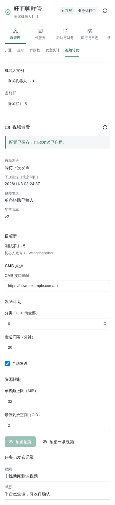
专门发言汇报成员还须由服务端单独授权，才可在指定机器人和群内禁言他人；
汇报名单、发言白名单或群管身份本身都不授予此权。
从客户端真正@一名成员，发送@大蛤 禁言128，就是禁言128分钟；
@大蛤 禁言 128也可，不需要再@机器人。时长必须明确填写1至4320整分钟，最多3天。
例如@大蛤 禁言4320为3天；超过4320分钟拒绝，不自动截短。普通自动处罚上限不变。
也支持@大蛤 禁言30分和@大蛤 禁言30分钟，末尾可带句号。
只发@大蛤 禁言或@大蛤 禁言。会提示补全时长，不默认处罚，不转AI。
不支持手打昵称、UID、多人@、仅回复或附带其他指令；回复与@对象冲突时拒绝。
自己、群主、管理员、机器人、有效白名单及黑名单成员不由此入口处理，
已有禁言不覆盖。黑名单仍走原流程，不缩短长期处罚。
此授权不包含踢人、解禁、改名单、改规则、财务或后台权限。
每次提交前复核授权和最新完整成员目录；暂停、停用、撤权、成员离群或晋升立即阻断未提交操作。
明确区分受理、拒绝和未知；未知不自动重试，平台受理不等于手机显示验收。
服务端私有mute_delegates.json记录具体账号、群及UID，并与当前speech_report.json取交集；
不存在或无效时不授权，新增汇报成员不会自动得到禁言权限。
2026-11-05起，专属命令在禁言受理后连带创建30分钟撤回任务： 以原命令时间为截止点，撤回目标在本群此前30分钟内、机器人有完整身份与撤回信息的消息， 普通文字、图片、表情、视频也在范围内，不再逐条判断是否违规。 先禁言、后撤回，不等OCR或AI。最新消息先处理，同机器人单批串行，每条间隔3至5秒，最多500条； 超限或机器人已有撤回任务时，提示未启动，不静默截取、不影响已受理禁言。 已撤回的跳过；拒绝、未知、权限变化、目标晋升／加白等停止后续操作。 后台原批量撤回区域可查看受理、核实、跳过、未知和剩余数量，也可停止后续撤回； 平台受理不等于手机已逐条消失。重启中断任务不自动续跑，未知结果不重试。 不追加通用撤回命令或后台登录权限，也不扩大授权群；缺少、已清理的原记录无法追补撤回。
2026-11-02新增简写，原命令继续可用：加黑＝黑名单，删黑＝解除黑名单，
加白＝白名单，删白＝移除白名单。权限、真实目标核验、时长和确认步骤不变；
加白用真正@，加黑／删黑用真正@或可信同群回复；
真正@一名成员 删白可定位已有记录，删白 名称也继续可用，
收到结果后均须选择白名单 序号、本人另发确认白名单 预览令牌，不直接移除或解禁。
只发删白会提示补全目标。真实@、名单状态或权限不符时返回具体提示，不猜昵称。
本群获授权原生群主／管理员用客户端**真正@一名成员＋白名单**直接加入，
不需要搜索、选择或确认；查看用白名单。
移除用移除白名单 当前名／保存旧名／精确UID，再选择白名单 序号，
核对后本人另发确认白名单 预览令牌。后台添加仍按当前完整目录的真实名称搜索，不接受UID盲添加。
原生回复同群一人的可核实原消息或真正@一人发送黑名单，登记后立即按本群时长禁言，不踢人。
每次可信真实重入也按本群时长禁言，重复通知、普通发言和重启不续封。
群内解除黑名单（兼容移除黑名单）移出名单并解禁，两项分别反馈；
后台添加只登记、不立即处罚，后台移除只移出名单。
机器人命令解禁 @成员／解除禁言 @成员或后台“当前禁言成员→解除禁言”，
核验平台已解禁后同时移出本群当前黑名单，保留历史审计。
明确命令的目标已经解禁时，也可核验后移除其当前黑名单，不再发送多余解禁请求。
未知回执、未核验或名单／权限变化时不强行移除，分别报告两步结果；
预览后重新拉黑会使旧确认失效。手机端直接解禁暂未接入可信事件同步，
不以当前未禁言、自然到期或读取页面自动删名单。
此联动已于2026-11-02北京时间加载，真实解禁及手机端完整验收仍未完成。
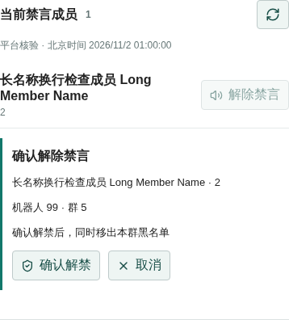
黑名单禁言时长 N分钟／小时／天及其时长设置聊天预览确认流程已移除。
已有相应后台权限者在群管理→规则→黑名单设置预览确认；本次入口移除不修改已保存的群时长。
未设置时默认仍为41760分钟（29天），后台范围仍为1—41760整分钟；
后续显式修改只影响之后的群内拉黑和真实重入，不重设已有禁言。普通自动禁言仍最多24小时。
新增黑白名单按机器人＋群＋UID互斥，须先明确移除另一名单；不自动转移。 历史重叠保留、黑名单优先、两份分别移除。不能用昵称、UID、手打@、复制引用或多目标冒充原生目标。 群主、管理员、机器人及完整身份核验仍受保护。旧日期记录中“不立即处罚”不是当前群内拉黑流程。
黑名单目标失败提示区分当前成员名单找不到目标、成员身份绑定不一致、原消息无法核实及 @与回复目标冲突。名单找不到只说明无法确认当前成员身份，可能已退群或资料未同步， 不能直接断定已退群，也不再提示成手打@或命令格式错误。这些目标核验失败均不修改名单、 不提交禁言或解禁；先核实成员是否仍在本群。此提示修复已于2026-11-02北京时间加载， 不代表已允许对离群成员拉黑或追补处罚。
下图来自隔离浏览器的中英文界面检查，不是已部署或正式群／手机验收：
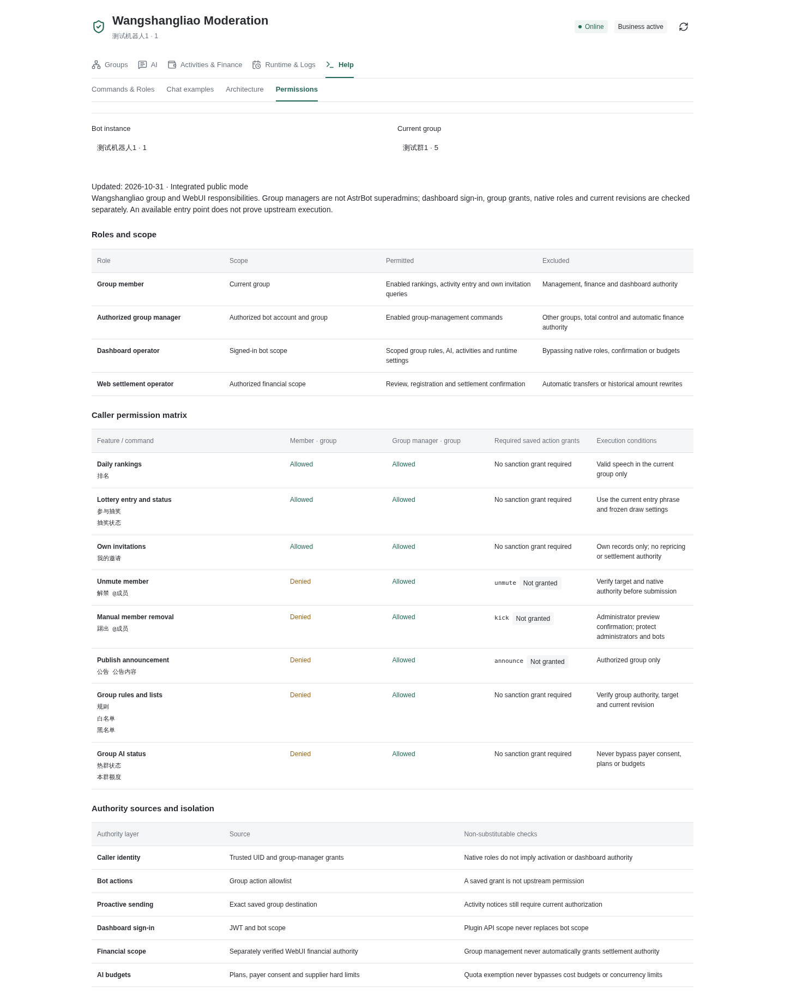
达到禁言条件时，先核权并提交禁言，再撤回消息，需要的违规提示放在最后。 前三次仅警告的规则与原禁言时长不变，不跳过管理员、白名单或身份保护。 慢撤回不会再挡住普通广告递进禁言；禁言与撤回结果分开核对，未知不自动重试。 本轮已完整重启加载，未主动用真实成员试罚；没有同口径实群延迟对照，不宣称线上提速幅度。
已有后台权限者进入 群管理 → 规则，选准机器人与群，勾选 防袭群， 保存时核对预览并本人确认。默认关闭，不需要在群里发送开启命令。 原「防刷屏」入口、阈值与警告循环保持不变；这是新增的独立新人防护开关。
真实新人观察10分钟：3秒3条任意内容，或10秒5条图片／表情／视频， 先禁言10分钟再独立撤回该轮，不动普通警告次数，也不等OCR。 60秒内两个不同新人触发，则防护15分钟；期间后续新人先禁言1分钟。 不追罚原有正常成员、不踢人、不自动拉黑，管理和有效白名单仍受保护，黑名单优先。 重进群只补已受理禁言的剩余分钟向上取整，通过机器人入口成功解禁取消该次剩余补执行。 手机直接解禁的事件识别尚待核验，暂不能视为会同步撤销补执行。
「防袭群状态」查看原因、剩余时间，以及各自独立的禁言和撤回结果。 「平台已受理」不等于手机已核验；「结果未知」不自动重试。缺权限、暂停或撤权时不提交处罚。 提前结束需本人预览确认，关闭或结束不自动解除已经存在的禁言。 不凭昵称判断换号，不把文字通知、邀请申请或首次发言当作真实入群。
本轮尚未通过两个普通目标的完整实群验收，六个正式群未开启；不为测试绕过群主保护。 下图为隔离浏览器状态页面，不是手机客户端处罚证据。


新网页草稿默认口令为 参与抽奖，成员在活动群整句发送即可报名，不需要@机器人。
已有草稿和已开启活动的自定义口令不自动改写，以本期公告为准。
每人每期只能报名一次；定时活动到发布后才接受报名。
报名成功回复本期冻结的活动文案，并在下方显示「已参与人数」和「昵称，参加抽奖成功」；
不附成员UID、传输身份或账号数字，也不额外@报名者。没有可信昵称时只显示成功提示，
不以UID代替；重复报名不增加人数。回执沿用群内命令自动撤回，不自动付款。
红包可勾选「仅整数元（每份至少1元）」，总金额、固定档位与人气王额外奖励均须为整元。 分配直接按整数元生成，准确用完总金额，不是把小数四舍五入。 「开奖方式」可选择原倒计时或「报满人数」；后者没有倒计时，满额后核验有效成员再公布， 未报满不会到时自动开奖。有效成员离群导致不足时暂停核对，不重分份额。 例如1111元、11份、拼手气、人气王额外188元，勾选整数元并选择报满人数， 则11名有效参与者获得合计1111元整数红包，最高红包者另加188元，总预算1299元。 新开关缺省关闭，旧活动仍按原冻结参数，不改变历史结果。
网页按钮只接受已登录后台的明确操作，重新核验机器人、群及负责管理员权限， 记录真实后台操作者，不伪造管理员聊天。连续点击防重；网络超时先刷新查看状态， 结果未知时不会自动重发通知、取消或创建新一期绕过核对。 开场通知只显示活动、金额、开奖条件、口令和领奖方式等必要内容； 这里只记录待发放金额，不自动付款。

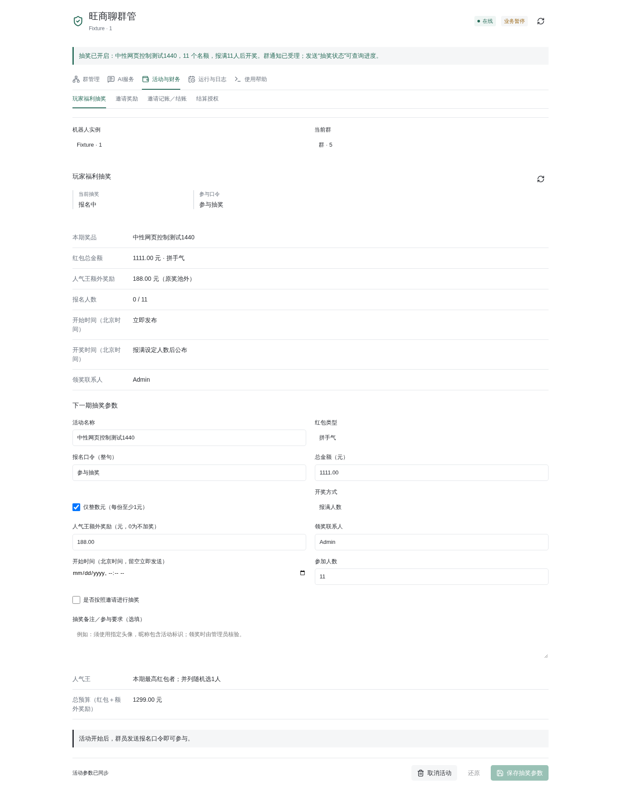
进入 活动与财务 → 玩家福利抽奖，选择「拼手气」，填写红包总金额、参加人数和 「人气王额外奖励（元，0为不加奖）」。加奖在原奖池之外单独追加，不扣任何人的红包。 例如红包3000元、人气王加奖288元，总预算3288元。普通红包、分档拼手气和原奖品抽奖不加此奖。
人气王是本期有效报名者中实际领到最高随机红包的1人，不是发言最多、邀请最多或管理员指定的人。 若最高金额并列，从并列者中随机选1人；开场公告提前写明该规则。 没有有效报名者则不发额外奖励；未领满时，按实际领取的红包评选，不使用无人领取的份额。 红包份额、额外金额、口令和开奖方式在开启或预约时一起冻结， 按所选倒计时或满员条件统一公布，不提前揭晓。
结果按原红包金额排序，获奖者单列「原红包＋人气王额外奖励＝合计」，另显示本期待发放合计。 原红包未领取余额与额外奖励未支出分开记录；通知未知不重抽或另选人。 0表示不加奖，旧客户端省略该字段保留已有设置；已有历史和进行中活动不追补奖励。 保存仍只是下期草稿，点击网页「开启活动／预约发布」建立本期；这里只记录待发放金额，不自动付款。

在 活动与财务 → 玩家福利抽奖 设置「开始时间（北京时间，留空立即发送）」。 选择完整日期与时刻，不受手机、浏览器或服务器所在时区影响；可预约未来30天内的时间。 「倒计时」仍是发布成功后的报名时长，不是开始时间。 例如开始时间为北京时间20:00、倒计时10分钟，机器人约20:00发布活动并开放报名， 发布成功约10分钟后统一公布结果，未报满也不会提前开奖。
保存参数仅保存草稿；后台点击「预约发布」，收到「已预约抽奖」才表示已建立持久任务。
原管理员聊天开启命令仍兼容，但不再要求使用。到点前不发群通知、不接受报名。
预约建立时冻结口令、参数和红包份额，到点不重新随机或采用后来改动的草稿。
当前抽奖区和 抽奖状态 可查询预约时间与状态；取消抽奖 可取消尚未发送的预约，
不会额外向群里发送取消通知。取消后才能修改该期参数或重新预约。
固定命令也支持 抽奖开始时间 YYYY-MM-DD HH:mm，抽奖开始时间 立即 恢复即时发布。
旧客户端不传开始时间时保留原值；现有未设置时间的活动继续即时开始。
预约跨重启保留，到点重新核对群、机器人、创建者当前管理权限和主动发送授权。 权限失效、成员目录无法核实或错过时刻超过60秒时阻止发送，不补发；核对原因后取消并重新预约。 开场发送结果未知时保留未知状态，不重复发送、不开放报名；开奖结果未知同样不重抽。 一个群同时只允许一期预约或进行中的抽奖。这里是活动通知与抽签，不自动付款。
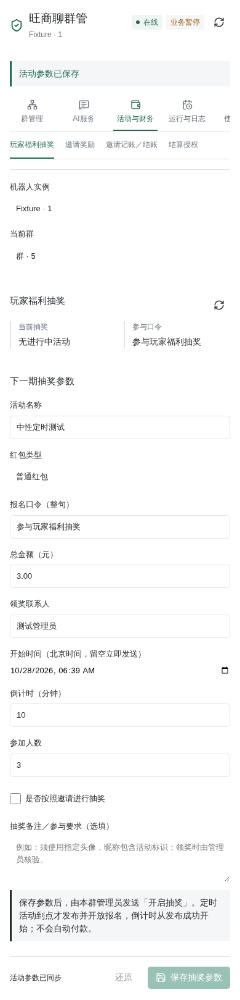
进入群管理 → 规则 → 本群发言白名单 → 白名单历史对话。 选择全部白名单或一名成员，再选择今日、昨日或今日和昨日，可按对话关键词作字面筛选。 点击「筛选最近100条」读取每人最近100条有效文字，按由旧到新编号；不足100条显示实际条数。 右上复制图标一次复制当前筛选范围内的成员姓名、UID、有效文字发言总数与编号对话正文。 单选一人只复制这一人，选择全部则合并复制整份白名单；不会发到群内或修改名单。
计数不包含撤回、违规、机器人消息和管理命令，最近30秒待核对。 关键词筛选影响展示正文，不改变所选日期内的有效文字发言总数。 读取范围只含北京时间今日和昨日，不扩展统计保留时间；正文从同群原消息账本临时读取， 不另存一份聊天档案。不足、原记录不可读、统计正在补齐或复制失败均明确提示，不编造对话。 切群、切日期、改筛选、取消或白名单变化后丢弃迟到结果；较大名单分批读取，消息处理不等待导出。

后台「群管理 → 规则」可分别开启「撤回合并聊天记录」「撤回二维码图片」 「撤回含数字图片」并保存。三个开关缺省关闭，按机器人和群独立设置。 命中仅撤回该原消息，不增加警告或禁言；有效白名单、群主、管理员和机器人仍受保护。 数字图片不限联系方式：普通截图里的时间、日期、金额也可能命中，开启前请核对。 仅处理加载后的新消息，不回扫旧记录；基础识别可能漏检，失败或超时不处罚。 合并记录通过真实消息格式识别，不把普通回复当作合并卡片，不宣称已展开全部内部文字。 二维码和数字使用本地OpenCV／Tesseract，不调用AI或外部识图服务，不保留识别文字。 新规则与刷屏独立：发图过快仍按现有3秒5条、10秒15条处理。
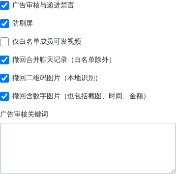
进入 旺商聊管理 → 群管理 → 发言统计，选择机器人、群，再切换今日／昨日。
每天北京时间零点重新计算当天；只保存昨天和今天的统计，不保留长期统计历史。
页面可查看群发言量、活跃人数、消息类型、小时分布和前30名。
在“成员发言统计”搜索名称或UID，点选对应成员即可单独查看，不需要聊天命令。
撤回、违规、机器人消息和管理命令不计，最近30秒待核对；自动白名单规则保持不变。
排名右侧的复制图标可一键复制当前所选日期的前30名，包含群名、群号、日期、
名次、成员名称、UID和发言条数。空榜或数据补齐中不复制；浏览器拒绝时会显示失败提示。
这是受权限保护的后台统计与导出，不是群内排名／排行回复；群内只显示前20名昵称和有效条数，不显示UID。
已配置专门汇报的机器人，在同页显示专门发言汇报，固定按UID核对指定成员， 分别列出各指定群的有效文字聊天句数、个人跨群合计和全员合计。上方今日／昨日切换同时生效， 右侧复制图标可复制完整分群汇报。图片、视频、转发、撤回、违规、机器人消息和管理命令不计入句数； 最近30秒待核对，只保存今日和昨日统计。统计补齐时禁止复制；任一指定群停用时不展示不完整的跨群总计。 这是统计展示，不会自动发到群里，不修改白名单或处罚。
每小时明细（2026-11-06）：专门汇报可切换每日汇总／每小时明细，并选择全部统计群或单个群。 小时表按北京时间00:00—01:00至23:00—24:00列出24个时段，展示每位成员条数、时段合计及全日合计， 沿用同一有效文字口径；撤回后相应小时和每日总数一起更新，不另存正文或长期小时历史。 复制图标导出制表符分隔的当前表格，可粘贴到表格软件；原SVG下载改为PNG图片下载， 手机可直接查看。导出包含日期、群范围、UID和最近核对时间；只在点击时由浏览器生成， 仅下载到本人设备，不上传、不在服务器保存报表文件或增加缓存，不发群。 临时图片与下载地址会释放；单张上限为400万像素、2MiB，超限或失败可先复制表格。 管理页沙箱不开放图片剪贴板权限；补齐中或读取失败时不导出，切换日期／群／视图会取消旧图片。

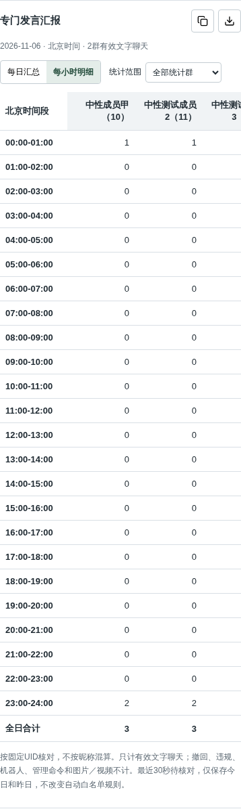
按北京时间昨天的有效文字发言榜，前20名且超过100条（至少101条）自动加入发言白名单。
加入后跨日保留，每次有效文字聊天刷新7天保留期，连续7天没有有效文字聊天自动退出。
不用每天重新进前20名；历史保留成员加每天新达标成员可超过20人，不从第21名补位。
今天发言不用于新授予，但能续期已有资格。撤回消息不计，沿用30秒最多一条、同文五分钟去重规则。
每30秒刷新，只保存资格和7天活跃时间摘要；聊天正文、每日统计仍只留今天与昨天。
手动白名单不变，黑名单优先；管理员明确移出后不按历史资格加回，须后续重新达标。
群内排名／排行等查询只展示今天前20名，不分页、不显示UID，不自动解除已有禁言。
内部排序统计和自动白名单继续使用UID；源码与离线验证不代表已经线上加载。
在 群管理 → 规则 → 关键词回复与定时发言 勾选 新广告发送成功后撤回上一组广告，预览并确认保存。默认关闭，每个机器人、每个群单独设置。 同群所有定时计划共用上一组记录：A→B→C轮播时，B整组发出后撤回A，C整组发出后撤回B， 不是等A下一轮才撤回旧A。配图和拆分后的多条文案一起处理，不动关键词回复、普通聊天或其他群。
仍然先发新图片、再发新文案，整组均有成功回执后才撤回上一组。 发送失败、部分送达或结果未知时保留旧广告；旧广告撤回失败不影响新广告的发送结果， 后台单独提示，未知不自动重试，重启也不重放。撤回多条消息时逐条间隔3秒，不同时批量提交。 开启后的第一组只建立记录，不追撤开启前的历史广告；关闭后不再跟踪旧记录。 平台受理撤回不等于手机已确认消失，超出平台撤回限制时保留异常供核对。 涉及接入器回执保存，发布需受控完整重启，不只热重载插件。


同步日期：2026-10-22。适用于现有AstrBot账号的公共合并模式。 文档目录 · 命令树 · AI 阅读与主题索引 · 当前架构与权限 · 历史验收与追加记录
机器人页「使用教程 · PDF」对应本教程。旧验收截图仅展示当时界面，不代表当前已授权。
2026-10-20后续三账号在测试群1459282完成3次隔离警告实测（两个fixture为1＋2次，非完整三级升级），
真实@大蛤、提及身份与原消息撤回正确，警告受理后12.112／12.115／12.125秒收到对端撤回通知。
规则、临时管理员角色已恢复，窗口关闭；这不是禁言升级、群AI、全功能或手机画面验收。
详细证据与保护边界见测试与验收。
已有实例的「保存登录并连接」只更新连接信息，不回写合并模式的群权限、规则或开关。 旧版页面可能因混入只读状态或默认群设置而保存失败；更新后先刷新页面，再完成一次登录。 安全验证成功但保存失败，不表示二级安全码错误；明确的配置错误会单独提示，不连续重试。
列表显示核验后的账号昵称，内部实例ID及权限不随昵称改变。 遇到拒绝登录时核对步骤与平台返回码，不把笼统报错直接当作封号，也不要连续重试。 不要向聊天、日志或文档粘贴密码、验证码、Token和Cookie。
账号登录在机器人页；业务管理在「插件 → 旺商聊群管 → 旺商聊管理」。 该页选择账号后可查看群管理、运行状态、规则、活动、定时、审计、架构表及权限表。 “占用开通名额”与“正在运行群数”分别统计；暂停／离群仍可能占名额，不等于正在执行。
| 原入口 | 现入口 |
|---|---|
| 群管理 → 开通与规则：开通、管理授权、升级 | 群管理 → 开通 |
| 群管理 → 开通与规则：审核、白名单、关键词回复、定时广告 | 群管理 → 规则 |
| 活动控制：抽奖 | 活动与财务 → 玩家福利抽奖 |
| 活动控制：邀请奖励 | 活动与财务 → 邀请奖励 |
| 处罚记录：历史累计与回执 | 运行与日志 → 处罚记录，另列平台当前禁言成员 |
开通页不保存审核规则；规则页不修改开通状态、暂停状态或管理员归属。 关键词回复与定时广告仍在规则页，修改须预览确认，不调用AI。 邀请奖励独立保存每位有效邀请的积分，不随抽奖保存而覆盖，不重算历史积分。
玩家福利抽奖设置活动名称、联系人、总金额和参加人数（1至100），选择普通红包、拼手气或分档拼手气。
报名口令可自定义1至32字单行文字，不能用已有命令、纯数字或以 /、@ 开头。
成员整句发送本期公告里的口令，口令和档位在本期开始后冻结。
「分档拼手气」支持最多10档固定金额和份数：例如总额3000元、30份，3份各288元，
剩下2136元随机拆成27份；也能继续增加188元等档位。每个固定档位可选填本群成员，
将其中一份绑定给该成员；同一成员只能指定一次，每档指定人数不能超过该档份数。
未选择任何成员时保持原规则，全部固定份额随机分给有效报名者。
指定成员必须在开奖时仍在本群、身份未变化且已经有效报名，否则暂停开奖并提示管理员核对，
不会静默改给其他成员。指定方案随本期冻结，进行中不能修改。
后台「当前抽奖」不展示本期指定成员及其金额；设置只在「下一期抽奖参数」中维护，
群公告、中奖公告和开奖结果也不附加内部指定标识。
编辑档位金额时，草稿内已指定成员跟随该档更新；重复金额须合并为同一档。
成员搜索与保存核验最多等待15秒，超时不使用旧名单、不保存指定方案；
切群、修改搜索词或还原草稿后，迟到的搜索结果失效。机器人账号不提供指定。
活动开场或结果回执未知时继续冻结参数，先核对原发送，不重建或重抽。
随机部分可能大于固定金额，固定档位不保证排名。开场打乱完整份额，未报满时固定份额也可能未领取，
剩余仍记未支出、不重新分摊。每份至少0.01元，档位总额或份数超出时拒绝保存。
只有勾选「是否按照邀请进行抽奖」才出现「拉几人可以抽」；未勾选不检查邀请门槛。
新网页草稿默认群成员发送 参与抽奖 报名，旧默认口令参与玩家福利抽奖及参加抽奖仍兼容；
自定义口令后只用本期新口令，旧命令会提示本期口令而不报名。
新活动开场时按设定人数固定全部红包份额。普通红包按分尽量均分（最多差0.01元），
拼手气提前随机拆份，每份至少0.01元。普通红包名单随机排序，
拼手气名单按金额从大到小展示，仅改变展示顺序，不改变任何成员分到的金额。
开奖公告按「活动名称、类型、报名关键词、北京时间开始／开奖时间、奖品列表、
已参与人数、中奖率、中奖名单」排列；报满模式显示报满条件，不伪造定时开奖时间。
分档奖品按金额降序列出「金额×份数」，剩余份数单列随机红包；
中奖名单显示昵称与「获得奖品」，不附内部UID或用UID代替缺失昵称，保留原生@提醒。
整数金额不带多余小数，有分金额仍精确显示。人气王额外奖励、未领取金额与待发放说明保留，
不改变抽奖算法、冻结份额或已存结果，也不自动重发历史公告。
默认在倒计时结束后统一公布，满员或「立即开奖」不能提前公布；
明确选择「报满人数」时改为满额后公布，无倒计时。
到时开奖只给仍符合条件的报名成员分配已有份额，没领完的不重新分摊。
例如100元、10份普通红包，只有5人有效报名就各分10元，剩余50元记录为未领取退回；
只有1人则分10元、退回90元；无人报名或取消则全部未支出。
「抽奖备注／参与要求」可留空，最多500字多行文字，例如指定头像、昵称包含活动标识。
备注随本期公告、状态与结果展示，要求由管理员核验，不自动识别头像或审核昵称。
本期金额、份额、备注及门槛冻结；结果和未领取金额先持久化再公告，未知回执不重抽。
机器人离群后已被清理／取消的活动，不会因迟到的发送回执重新开放或改成已开奖。
**这是待发放分配与未支出记录，不连接支付宝，不发生真实扣款、自动付款或银行退款，
也不写财务结账账本。**原有奖品抽奖保留兼容，更新前已开启或已开奖活动不重算。
轮播图片在本群私有存储内按摘要复用；同一计划重复选择同一图片时在上传处提示， 不替换原图，不等到确认保存才报错。不同计划仍可各自引用同一张图片。
处罚页的「当前禁言成员」实时查询平台，不以历史处罚时间推定。 「解除禁言」先选人确认，再重新核验本群身份、原生管理权和动作授权；不批量解禁， 不清除历史违规。回执未知不自动重试，平台查询失败不显示成空名单。
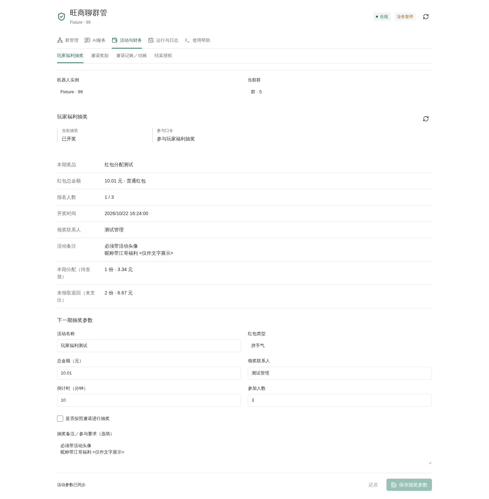

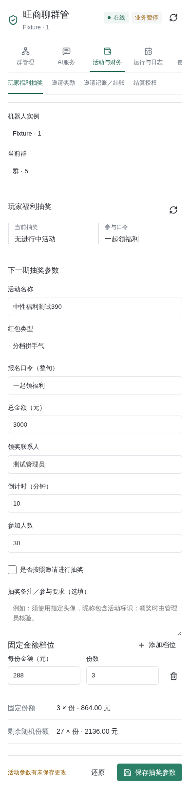


普通成员拉入会触发受控自动退群。不能把群主、审批人或系统通知发送者当成真实邀请者。 邀请来源无法确认时，保持未开通，联系负责人核对；后台一次性开通码十分钟有效， 仅存摘要且只能使用一次，不能绕过真实邀请与邀请者平台管理身份。 原群踢出重拉不转移管理归属，不通过清空旧授权伪造首次开通。
机器人尚未被设为管理员时，本群功能会提示： 「当前机器人不是本群群管理员，本群功能暂不可用。请先把机器人设为群管理员，再使用命令。」 不要用反复发送命令代替设置平台权限。
本轮名单互斥／移除已于北京时间2026-10-23 22:59:23完整重启加载（PID4071721，NRestarts=0）。 22:59:51保护快照22面／config全同；Python1794 passed／2 skipped，UI177 unit／9 browser通过。 未新增真实群成员操作／处罚，旧needs_review12不重试；无真实满链路压测， 性能范围见维护最新记录，文档dist同步由负责人完成。 新增同bot＋group＋UID黑／白名单互斥：已有另一名单则提示先移除，不自动转移或删除。 历史重叠保留，黑名单优先，两份名单分别移除；移除黑名单不解禁，也不移除白名单。 下方加载与配置结果属于此前时长版本，不覆盖这次补修。
北京时间2026-10-23 20:02:56完整重启已加载（PID3317496，NRestarts=0）， 20:10:45测试群在线时长41760→60→41760的读取／预览／确认／读回通过，预览不写入、默认已恢复。 本轮真实新重入／禁言未测，离线与配置流程通过不能代替实际处罚验收。 当日16:53:53加载及随后三踢实测仅属旧策略历史。 当时“加入不立即处罚、移除不解禁”不是当前群内契约；当前群内真实@／可信回复 拉黑即时禁言、解除黑名单移出并解禁，后台登记和移除仍不自动处罚／解禁。 操作步骤以本文开头及当前命令树为准， 完整历史证据保留在维护记录，不用旧加载结果代替本轮部署或验收。
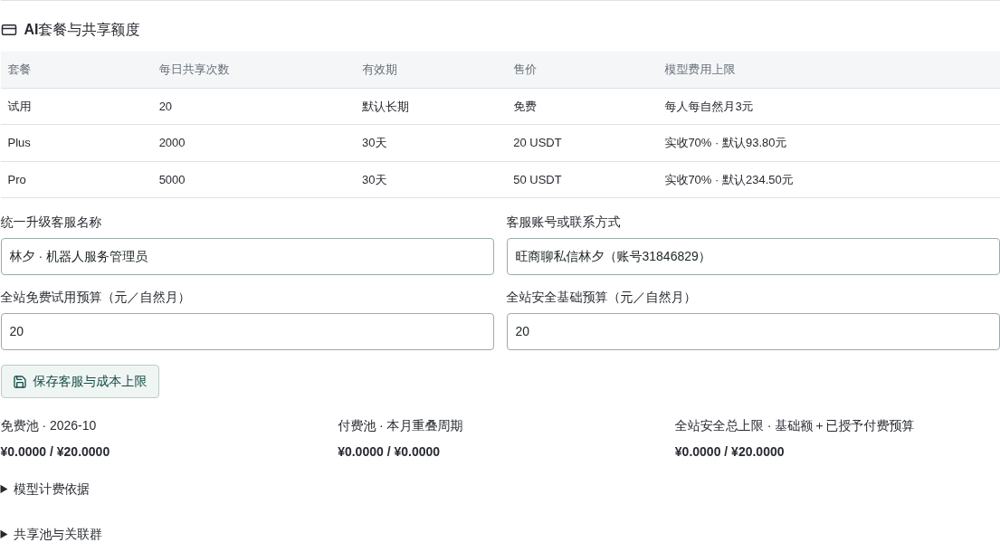
撤去机器人平台管理权：保留配置、管理员和数据，暂停本群功能，恢复后不补执行旧处罚。 确认踢出：停止任务、作废旧确认，清理本账号本群工作数据； 返现账本、原管理归属、最小审计和未知回执不自动删除。 断线、接口报错、群列表暂缺不等于踢出。
保存冲突时刷新、重新核对，不反复提交旧预览。没有群可选时核对接收机器人账号、
本人真实身份和逐群授权；不要靠昵称或自报UID修补权限。
2026-10-20加载后只读核对：1516387群AI的version 5四项开关均关闭，加载前后未变；
业务群运行与群AI开关不同，不能用早先运行快照或旧报告推断当前AI已开启。
当前测试边界见测试入口，历史证据见验收报告，
维护操作见发布说明。